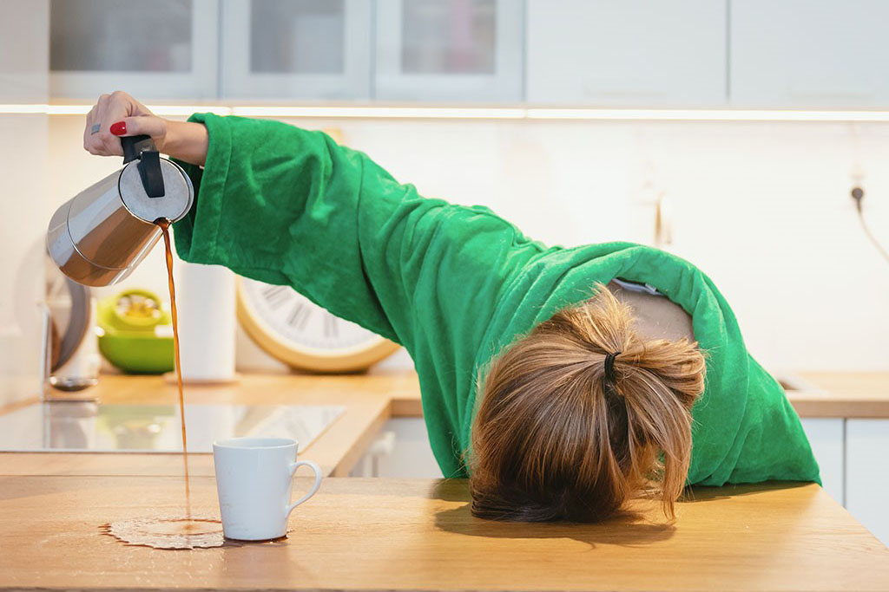
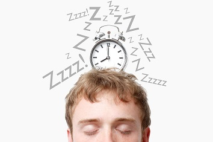

Descripcion
Bien es sabido que la rutina del ser humano ha cambiado a pasos agigantados junto con el desarrollo tecnológico. La forma y la velocidad
a la que vivimos son totalmente diferentes a la de nuestros abuelos, y esto puede estar jugándonos una mala pasada; en los últimos años
las demencias se han multiplicado.

Las consecuencias no sólo se reflejan en las deficiencias neurológicas (menor atención, función y memoria a largo plazo), también se
relacionan con procesos de ganancia de peso. Ya que, con la privación, restricción o falta de sueño, se detecta más apetito, antojos
y mayor ingesta calórica por parte del afectado.
Descanso Adecuado

Es el estado momentáneo de reposo, tranquilidad o inactividad, que se realiza en medio del o de otra actividad para reponer fuerzas físicas,
mentales y espirituales.Parte de un Descanso Adecuado es tener un sueño reparador que te permita la renovación de tu cuerpo y mente.
¿Qué necesitas para lograrlo?
La clave está en realizar ciertas prácticas saludables antes de irnos a dormir, que pueden parecer insignificantes, pero ayudan un montón a
conciliar el sueño y dormir de corrido toda la noche:
- Cenar de forma apropiada
- Evitar la cafeina antes de acostarnos
- Suspender los aparatos electrónicos en la habitación
- No hacer actividad física antes de dormir